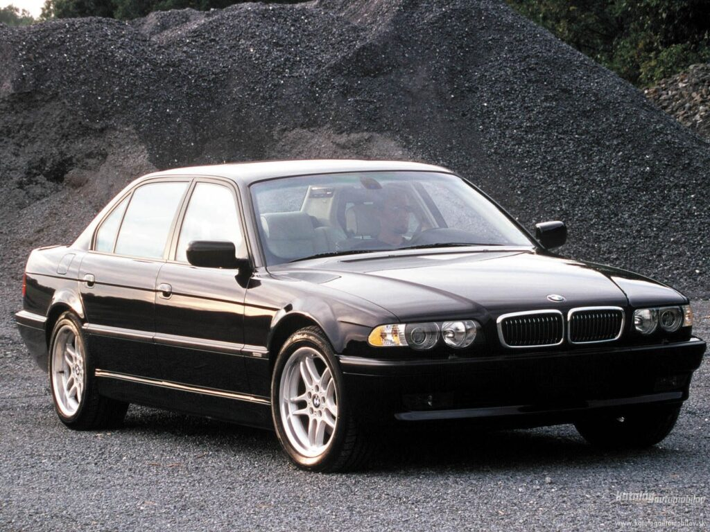

The E38 took the executive-arse-chauffeuring baton from the E32 in 1994. The executives in question were sad to see their E32s leave, but they were over the moon as soon as their cheeks hit the E38’s leather – and it was always leather in an E38. Cloth wasn’t even an option. Swanky. Of course it wasn’t all about leather, nice though cow skin is. It was the whole package. It was a world away from the E32, yet at the same time still familiar. The front end still sported the famed BMW ‘kidneys’ and the rear doors still housed the Hofmeister Kink.The overall silhouette wasn’t a million miles off its predecessor. Its real clout, however, came from its specification and range of engines. Inside you had that leather, air-con, a 14 speaker stereo system, gigantic sunroof, comfortable seating for 5 adults, electric windows, a mobile phone in some cases, steering wheel mounted controls, cruise control and a little thing under the dash that went “BONG!” if you left the keys in the ignition after getting out. Fancy.
The E38 wasn’t popular solely because it had leather and some fancy electronic stuff. No, it was also a popular beast because it came with some cracking engines. There was the straight-six 2.8 which, while not the fastest, still managed to hustle the E38’s bulk along nicely. At the other end of the scale there was the 5.4 litre V12 (with over 300bhp) for executives in a hurry, and then, right in the middle, there were the V8s. From 3.0 through to 4.4litres in capacity, there was an engine for everyone. Everyone apart from the economically minded, that is. The Europeans got a diesel. We didn’t though, nor did the U.S market. Apparently we can’t be trusted with diesel. Still, bugger’em, we like snorty, fuel-hungry V8s. In your FACE, diesel.

On the road – and we can vouch for this – the E38 is great. Considering it’s a bit of a fat old Hector it doesn’t half motor. Not just on the M6 while on your way to powerful board meeting at I’m A God-Damn Executive INC, either. No, this sucker will lap up the twisty stuff with gusto. To coin BMW’s very own tagline, it really is the ultimate driving machine. It was so good in fact, that when the new, aesthetically challenged E65 7 Series hit the dealerships in 2002, sales of the E38 actually went up! Companies bought them in huge numbers before they ran out. A rare achievement in the automotive world. So, there you go, the E38 7 Series. One of the best luxury cars ever made. We had one (well, we had two actually, but the other one blew up. Long story) and we loved it. If you get one, you’ll love it too. Plus, you’ll be able to pretend you’re Jason Statham from The Transporter. He had fancy kicking fights with Ninjas you know?